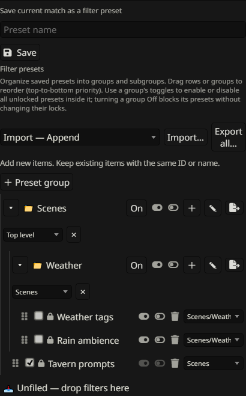
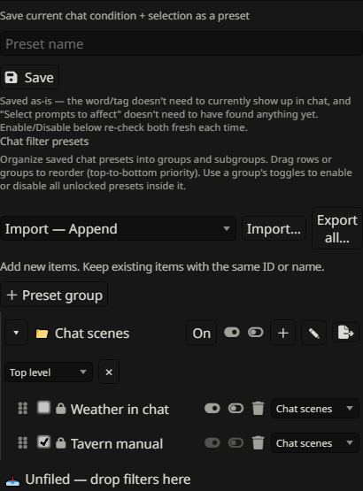

Filter presets
Save manual filtering recipes, organize and reorder them in groups, run whole preset groups top to bottom, and share preset groups or whole collections.
Save & run a preset


Configure a manual Filter criterion, scope and target, enter a name, then save. A valid criterion can be saved even before Apply or when nothing currently matches. Each saved row exposes a drag handle, lock checkbox, Enable and Disable actions, delete, and group selector.
Running a preset (or running its preset group) rereads current prompt content and prompt/folder tags, respects the current exclusions and scope, and applies its saved target to every matched prompt and folder even if a parent folder is disabled. It stores a recipe, not a snapshot. To change a manual recipe, save a new preset and remove the old one, or import a replacement; the manual preset rows do not use Auto Filter’s Update filter editor.
Content presets & Chat presets


The Filter dialog contains separate collections for prompt content/tag presets and Chat filter presets. A content preset stores its match settings and target. A Chat preset stores a recent-chat condition plus independent matched or manually selected effect targets.
A Chat preset can report its current condition, but its manual Enable/Disable action (and its group’s Enable/Disable actions) remain under your control even when the condition is not met. Choose Auto Filter for automatic branching. Each collection has its own groups, drag-to-reorder priority, group exports, and transfer controls.
Locks & group switches
A preset’s lock blocks its manual action buttons and skips it when its group is run. A disabled containing group (Off) also blocks descendant preset actions and disables the group’s own Enable/Disable toggle buttons without changing each preset’s individual lock. Unlock or switch all relevant ancestors back On to make those actions available again.
Locking or switching a group Off does not undo an action already applied, and switching a group On does not automatically execute its presets. Use the group’s Enable/Disable toggle icons to run its unlocked presets.
Create, nest, reorder & run groups
Use ＋ Preset group to create a top-level container; a group’s ＋ creates a subgroup. Every preset group header includes Enable and Disable toggle icons right beside its On/Off switch—clicking either runs every unlocked preset in that group (and its enabled subgroups) in top-to-bottom visual order. Collapse arrows hide descendants, the pencil renames the group, and the export icon exports the group.
Drag preset rows by their handle (or row) onto another row’s top or bottom half to reorder them from top to bottom (including dragging across groups), or drop onto a group header to move into that group. Drag group headers onto another group’s top/bottom edge to reorder groups, or onto the middle to nest as a subgroup. A group cannot be moved into itself or its descendants. Deleting a group keeps its presets and moves them to the parent rather than deleting them.
Export a group or import a collection
Use a group header’s Export button to download every preset inside that group (and its subgroups) together with its group/ancestor hierarchy. Individual preset rows do not have separate export buttons. The collection’s Export all… saves all its presets and groups. Select a mode and use Import… to load either a group export or a full collection file into the matching collection.
- Import — Append: keep existing matches and add new entries.
- Import — Replace matching: update matches and add new entries while retaining unrelated ones.
- Import — Clear and import: clear that destination collection and its groups, then load the file.
Matching uses identifier first, then a unique name; ambiguous name matches are rejected. Imports are separate for content presets, Chat presets and Auto Filter rules. Review the portable preset limitations: these files do not include prompt definitions or assigned tags.
Remove presets without removing prompts
The preset row’s delete control removes the saved recipe. It does not delete prompt definitions, folder organization, or reverse the enabled states from its last run. Group deletion likewise retains its presets in their parent.
Export a collection before reorganizing it if you want a portable copy of the recipes and group layout. Clearing a preset collection during import is different from clearing the active prompt list.